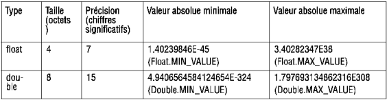

Types en Java¶
Types Primitifs¶
4 types primitfs en Java:
les entiers
les flottants
les caracteres
les booleans
Les entiers¶

Les flottants¶
{kind=link}
Les caractéres¶
mot clef: char .
Java représente les caracteres en memoires sur 2 octets.
On peut aussi obtenir leur valeur en int
char c = 'E';
char a = 65;
System.out.Println(" a = "+ a);
// affichera a = A
ci dessous, les charactéres ne disposant pas de graphisme :

Les booleans¶
Ils sont notés soit true ou false
Constante de Type Primitifs¶
En java on utilise le mot clef : final
Il est d”usage d’ecrire le nom de la constante en majuscule
Et on peut l’intialiser en différé soit un peu aprés sa déclaration.
Donc final différe quelque peu de la notion de constante symbolique:
pour résumer en Java, final permet de déclarer que la variable aura une valeur fixe et immuable une fois son initialisation effectuée
final int N =20;
// permet d'ulitser la constante a partir d'un Object et non d'instance
//et ceci partout puisqu'elle est déclarée en public static
public static final int N =20;